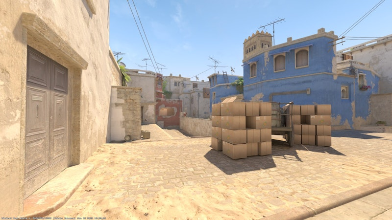
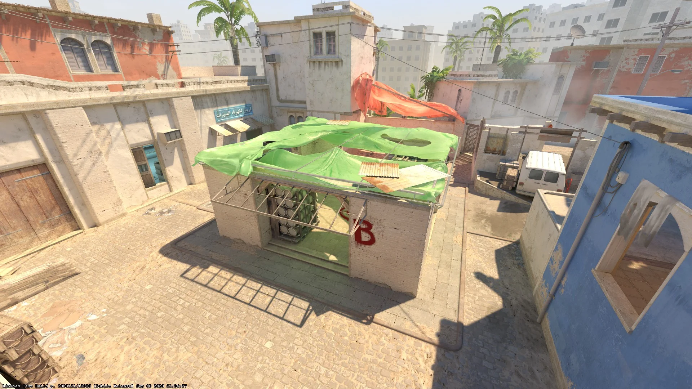
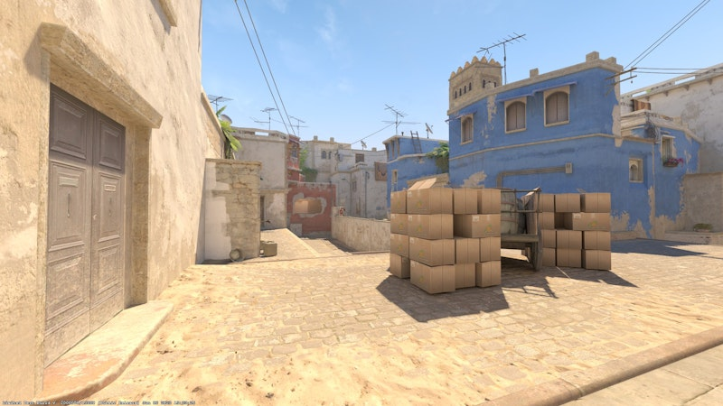
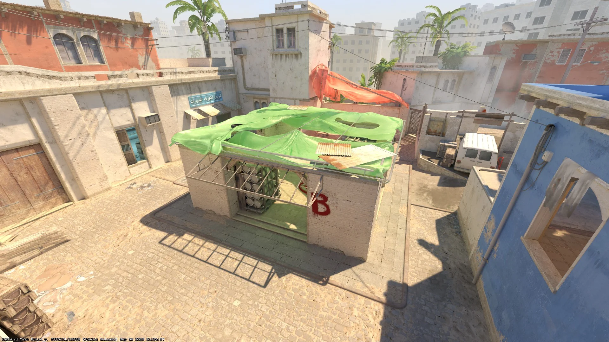

Mirage es un mapa ambientado en un país árabe, probablemente Marruecos, sigue la estructura de la mayoría
de mapas del juego, consistente de 2 sites con una o dos entradas y un "medio" el cual tiene acceso a ambos.
Es uno de mis mapas favoritos porque no es tan necesario tener una comunicación tan activa con tu equipo ya que
no da lugar a estrategias locas y las zonas donde se suele colocar la gente suelen estar bastante "prescritas",
por lo que a priori no es necesario tener muchos reflejos al atacar.
Una cosa que no me gusta es, irónicamente, que le gusta a la gran mayoría de gente, por lo que en las partidas
competitivas suele ser de los mapas más seleccionados y es fácil aborrecerlo al ser un mapa tan "estándar".